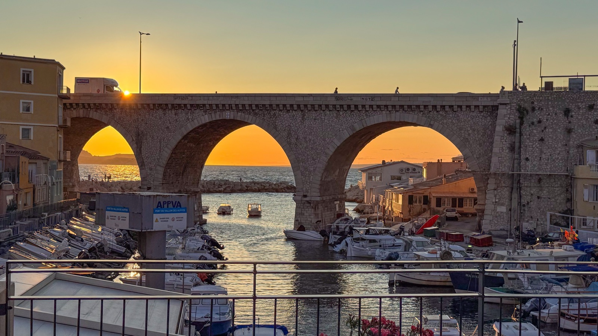

La vidéo souvenir
Les temps forts
Jeudi 11Retrouvailles à Notre-Dame de la Garde, descente par le Bois sacré et cocktail « Chez Jeannot » au Vallon des Auffes.
Vendredi 12Grotte Cosquer, Compagnie du Ponant ou Jivaro Sailing Team ; balade guidée dans le Panier ; dîner-débat avec le général David Galtier sur la sécurité à Marseille.
Samedi 13Croisière dans les calanques avec déjeuner à bord, puis dîner de gala à l'Union Nautique Marseillaise : résultats de l'enquête de promotion et remise de l'ouvrage de l'anniversaire.
Dimanche 14Messe à l'abbaye Saint-Victor et cocktail de clôture au Château Saint-Victor, résidence du gouverneur militaire.
Anniversaire à Marseille
48e anniversaire de la promotion X77, du jeudi 11 au dimanche 14 septembre 2025
Quatre jours sous le soleil de Marseille

On ne pouvait pas attendre le cinquantième : la promotion X77 a fêté son 48e anniversaire à Marseille, quatre jours de retrouvailles, de visites et d'échanges sous un soleil radieux. Revivez-les en vidéo, en photos et dans le programme détaillé.
Photos : Patrick Tejedor, Tristan de Viaris et partages des participants. Vidéo : Stéphanie Moser.